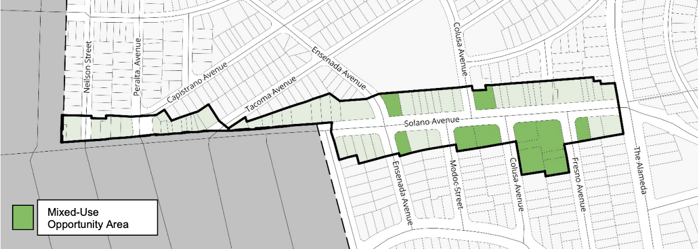
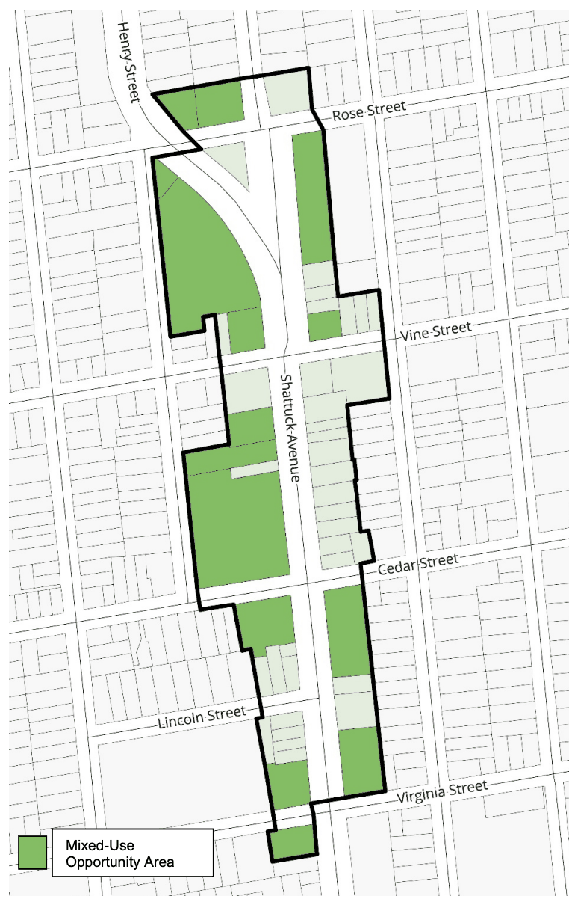

Corridors Zoning Update
New zoning for Solano Avenue and North Shattuck, the two District 5 corridors in the plan.
The City Council discusses this on Tuesday, December 1, at 6:00 pm. At that meeting, the Council will hold a public hearing and vote on the first reading of the zoning ordinance, along with General Plan amendments. Attend at 1231 Addison St. or on Zoom; the Zoom link is on the meeting agenda.
The City is rewriting the zoning for three commercial corridors: Solano Avenue, North Shattuck, and College Avenue in Elmwood. Two of them, Solano and North Shattuck, are in District 5. Berkeley's 2023–2031 Housing Element named these as priority corridors for new housing. The update aims to allow more homes near shops and transit, advance fair housing, and set clear, objective building standards, while supporting the businesses already there. Planning began in 2024, with community workshops, a survey, and Planning Commission hearings along the way.
The plan keeps today's height limits along most of each street and allows taller buildings only on selected sites called mixed-use opportunity areas. City staff chose these sites for their size, orientation, access, and ownership. Neighboring parcels can't be combined to qualify.
What about College Avenue in the Elmwood? The update also covers College Avenue in the Elmwood, which is outside District 5. This page focuses on Solano and North Shattuck. For the proposed changes in the Elmwood, including its opportunity area map (Figure 1, page 7), see the December 1 staff report.
Solano Avenue
- Today
- Up to 2 stories (28 feet)
- Most of the street
- No change: 2 stories (28 feet)
- Opportunity areas
- Up to 6 stories (68 feet)
- With a density bonus
- About 8–9 stories (98 feet) with a 50% state density bonus
- Potential new homes
- About 528, 53 of them affordable
- Also
- The Andronico's parking lot parcels would be rezoned from R-1 to commercial (C-SO)
North Shattuck
- Today
- Up to 3 stories (35 feet)
- Most of the street
- 3 stories, with the limit raised to 38 feet
- Opportunity areas
- Up to 7 stories (78 feet)
- With a density bonus
- About 9–11 stories (118 feet) with a 50% state density bonus
- Potential new homes
- About 1,080, 108 of them affordable
- Shops on the ground floor. At least 80% of a building's main street frontage must be commercial or live/work space. In Commercial Priority Zones, ground-floor commercial is required and ground-floor apartments aren't allowed.
- Storefronts ready to rent. New commercial space must be delivered as a “warm shell,” with ventilation, utility capacity, and grease interceptors.
- Big stores stay. If a commercial space over 18,000 square feet is torn down, the new building must include at least 10,000 square feet of commercial space.
- Notice for business tenants. Developers must notify commercial tenants in writing before applying for a permit. Staff also recommend that the City Manager study business license tax relief and relocation help for displaced businesses.
- Simpler approvals. Qualifying projects could be approved with an administrative use permit, and lot coverage limits and upper-floor stepbacks are dropped.
- Density bonus. The density bonus heights above are City estimates, not zoning limits. State law allows them only when a project includes below-market-rate homes.
- Emergency services. Staff would come back after five years to check the effect on emergency response.
Where the opportunity areas are
The dark green parcels are mixed-use opportunity areas, where the taller limits would apply. The rest of the outlined corridor keeps the base limits. Maps from the City's December 1 staff report.


These maps and the Commercial Priority Zone maps (Figures 5 and 6, page 15), are in the staff report.
From Councilmember O'Keefe
I'm working with colleagues on a change that would lower the opportunity-area height limits by one floor: 5 stories on Solano and 6 on Shattuck. Lower limits would encourage builders to use the state density bonus, which requires affordable homes built on site instead of a fee paid to the City. I see it as a step toward housing equity.
To comment, email the City Council at council@berkeleyca.gov or the District 5 office at sokeefe@berkeleyca.gov. Questions about the project can go to City planning staff at corridors@berkeleyca.gov.